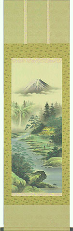

その他 33・脅威の大三元理論？
塔四郎 日付：2003/07/28(Mon)メルマガの記事にしようかとも思いましたが、思うところあって(笑)こちらにカキコしました。

http://www.topart.co.jp/html/12770.html白發中の揃った役満“大三元”が今世紀最強にして最大のパワーを発揮！！
百発百中の大開運が到来する！！
一見すると、繊細な安定感のある筆致で描かれた美しい富士山水図ですが、中央には的に矢を撃つ親子孫三代の姿があります。実はここに、この絵に秘められた「百発百中の大開運」のいわれが託されているのです。「大三元」とは麻雀の中で最高の役である役満のひとつ。34種類ある牌の中で最も格が高い「白」「發」「中」の三元牌を揃えるもので、滅多に上がれない最高の役として有名です。その三元牌にはそれぞれ開運の意味が込められており、すなわち「白」「發」「中」が揃えば「百発百中」の大開運が得られ、しかもその神通力は親子孫三代にわたって続くとされているのです。「白」はその昔、中国で投壺という遊びの的の「白板：ばいばん」を意味し、風水の上では長寿を象徴。「發」の字源は人が弓矢を放つ姿で、さらに「緑發」も意味し、麦が発芽する色で発生と勢いを表し金財運を象徴。「中」は「紅中：ふぉんちゅん」といって的に当たることを意味し、精神の福を象徴します。そのうえ、「白」を霊峰富士に、「緑發」を樹木の新緑に、「紅中」を家に見立て、3色を基調に仕上げました。伝統吉祥題材・風水・陰陽五行・密教など開運研究に情熱を注ぐ池田陽山画伯が、構想に3年を費やして驚異の大三元理論を取り入れた吉祥大開運図。山水図としても美しく描き込まれたこの絵を飾ることにより、必ずや百発百中の大開運と、親子孫三代にわたる福禄寿の幸せがもたらされることでしょう。かつてない絶大な福徳を秘めた逸品です。
池田陽山 略歴
昭和35年、山形県生まれ。日本国内はもとより、中国から伝来したとされる伝統吉祥題材・風水・陰陽五行・密教等を研究。それらを盛り込んだ吉祥画には定評がある。
作品番号 12-770 百発百中 大三元（肉筆）池田陽山 画
●寸法／186×53cm●新絹本●三段本表装●軸先／唐木●桐箱収納●風鎮付
価格 38,000円
あさみ 日付：2003/7/31(Thu)「一見すると富士山水図」なんて書いてあったけど、じっくり見ても、そうとしか思えなかった。（^-^；
しかし文中の「白はその昔、中国で投壺という遊びの」とか、「發の字源は人が弓矢を放つ姿で」、あるいは「中は的に当たることを意味し」というくだりはその通りなので、いかにももっともらしい。
しかし「白を霊峰富士に、緑發を樹木の新緑に、紅中を家に見立て」というのは、いかにも苦しい。いくら、「驚異の大三元理論を取り入れた吉祥大開運図」であっても、手を出す気にはなれない。(^ー^；
いっそのことモロに大三元をあしらった掛け軸なら、買ってもいいんだけど。